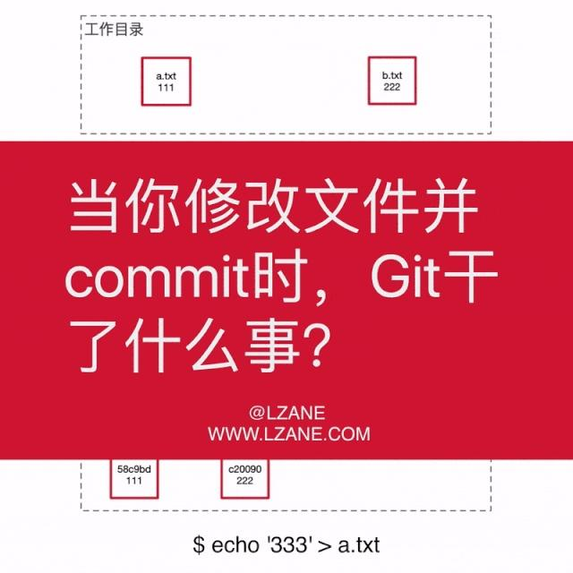
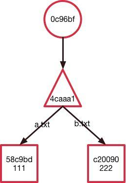
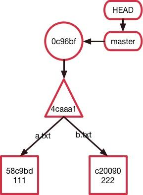
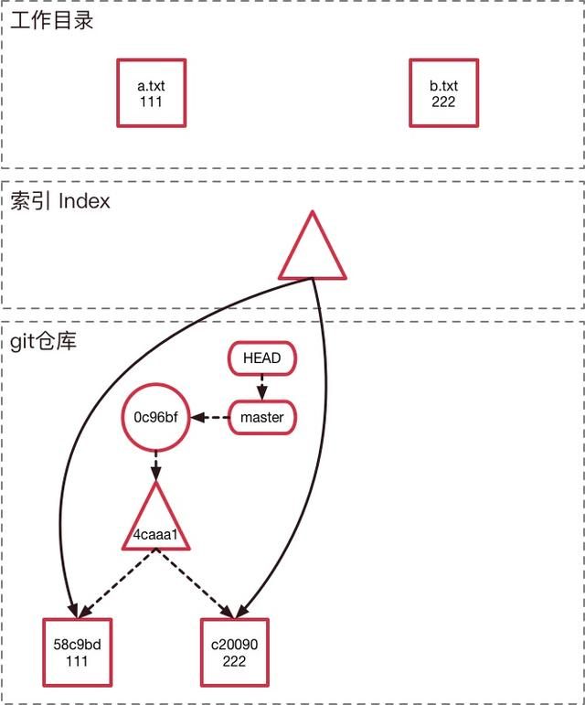
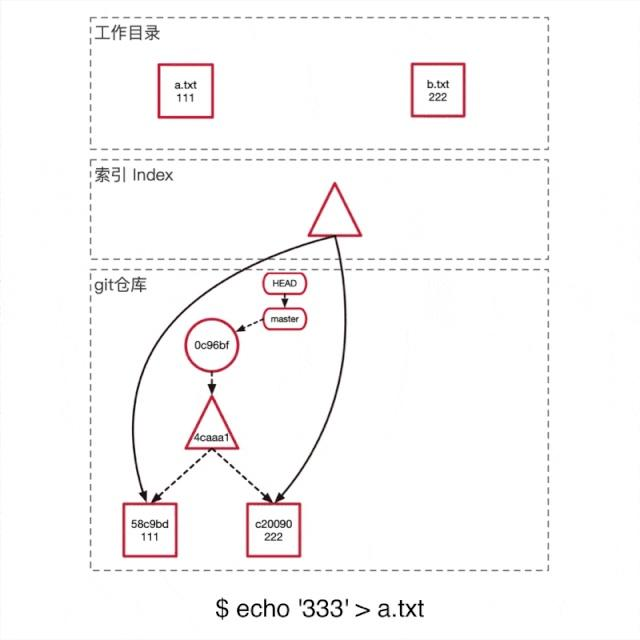
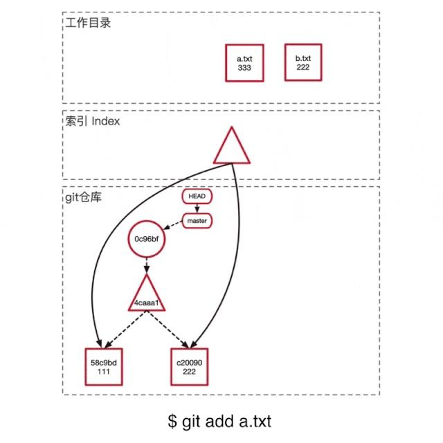
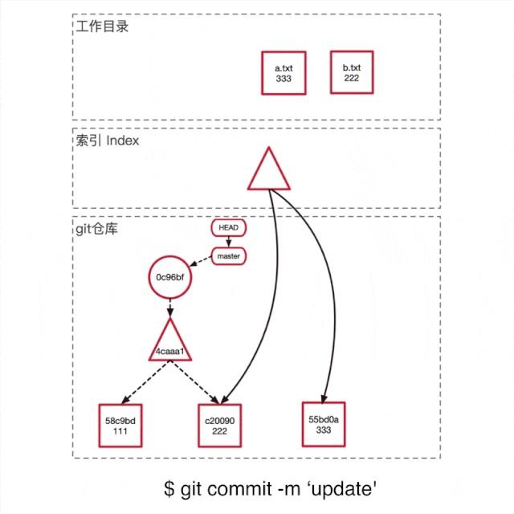

这才是真正的Git——Git内部原理揭秘！
Java技术架构 2020-04-03 12:02:00
作者：lzaneli，腾讯 TEG 前端开发工程师
本文以一个具体例子结合动图介绍了Git的内部原理，包括Git是什么储存我们的代码和变更历史的、更改一个文件时，Git内部是怎么变化的、Git这样实现的有什么好处等等。
通过例子解释清楚上面这张动图，让大家了解Git的内部原理。如果你已经能够看懂这张图了，下面的内容可能对你来说会比较基础。
视频链接：
https://www.bilibili.com/video/av77252063
PPT 链接：
https://www.lzane.com/slide/git-under-the-hood

前言
近几年技术发展十分迅猛，让部分同学养成了一种学习知识停留在表面，只会调用一些指令的习惯。我们时常有一种“我会用这个技术、这个框架”的错觉，等到真正遇到问题，才发现事情没有那么简单。
而Git也是一个大部分人都知道如何去使用它，知道有哪些命令，却只有少部分人知道具体原理的东西。了解一些底层的东西，可以更好的帮你理清思路，知道你真正在操作什么，不会迷失在Git大量的指令和参数上面。
Git是怎么储存信息的
这里会用一个简单的例子让大家直观感受一下git是怎么储存信息的。
首先我们先创建两个文件
$ git init
$ echo '111' > a.txt
$ echo '222' > b.txt
$ git add *.txt
Git会将整个数据库储存在.git/目录下，如果你此时去查看.git/objects目录，你会发现仓库里面多了两个object。
$ tree .git/objects
.git/objects
├── 58
│ └── c9bdf9d017fcd178dc8c073cbfcbb7ff240d6c
├── c2
│ └── 00906efd24ec5e783bee7f23b5d7c941b0c12c
├── info
└── pack
好奇的我们来看一下里面存的是什么东西
$ cat .git/objects/58/c9bdf9d017fcd178dc8c073cbfcbb7ff240d6c
xKOR0a044K%
怎么是一串乱码？这是因为Git将信息压缩成二进制文件。但是不用担心，因为Git也提供了一个能够帮助你探索它的api git cat-file [-t] [-p]， -t可以查看object的类型，-p可以查看object储存的具体内容。
$ git cat-file -t 58c9
blob
$ git cat-file -p 58c9
111
可以发现这个object是一个blob类型的节点，他的内容是111，也就是说这个object储存着a.txt文件的内容。
这里我们遇到第一种Git object，blob类型，它只储存的是一个文件的内容，不包括文件名等其他信息。然后将这些信息经过SHA1哈希算法得到对应的哈希值58c9bdf9d017fcd178dc8c073cbfcbb7ff240d6c，作为这个object在Git仓库中的唯一身份证。
也就是说，我们此时的Git仓库是这样子的：
我们继续探索，我们创建一个commit。
$ git commit -am '[+] init'
$ tree .git/objects
.git/objects
├── 0c
│ └── 96bfc59d0f02317d002ebbf8318f46c7e47ab2
├── 4c
│ └── aaa1a9ae0b274fba9e3675f9ef071616e5b209
...
我们会发现当我们commit完成之后，Git仓库里面多出来两个object。同样使用cat-file命令，我们看看它们分别是什么类型以及具体的内容是什么。
$ git cat-file -t 4caaa1
tree
$ git cat-file -p 4caaa1
100644 blob 58c9bdf9d017fcd178dc8c0... a.txt
100644 blob c200906efd24ec5e783bee7... b.txt
这里我们遇到了第二种Git object类型——tree，它将当前的目录结构打了一个快照。从它储存的内容来看可以发现它储存了一个目录结构（类似于文件夹），以及每一个文件（或者子文件夹）的权限、类型、对应的身份证（SHA1值）、以及文件名。
此时的Git仓库是这样的：
$ git cat-file -t 0c96bf
commit
$ git cat-file -p 0c96bf
tree 4caaa1a9ae0b274fba9e3675f9ef071616e5b209
author lzane 李泽帆 1573302343 +0800
committer lzane 李泽帆 1573302343 +0800
[+] init
接着我们发现了第三种Git object类型——commit，它储存的是一个提交的信息，包括对应目录结构的快照tree的哈希值，上一个提交的哈希值（这里由于是第一个提交，所以没有父节点。在一个merge提交中还会出现多个父节点），提交的作者以及提交的具体时间，最后是该提交的信息。
此时我们去看Git仓库是这样的：

到这里我们就知道Git是怎么储存一个提交的信息的了，那有同学就会问，我们平常接触的分支信息储存在哪里呢？
$ cat .git/HEAD
ref: refs/heads/master
$ cat .git/refs/heads/master
0c96bfc59d0f02317d002ebbf8318f46c7e47ab2
在Git仓库里面，HEAD、分支、普通的Tag可以简单的理解成是一个指针，指向对应commit的SHA1值。

其实还有第四种Git object，类型是tag，在添加含附注的tag（git tag -a）的时候会新建，这里不详细介绍，有兴趣的朋友按照上文中的方法可以深入探究。
至此我们知道了Git是什么储存一个文件的内容、目录结构、commit信息和分支的。其本质上是一个key-value的数据库加上默克尔树形成的有向无环图（DAG）。这里可以蹭一下区块链的热度，区块链的数据结构也使用了默克尔树。
Git的三个分区
接下来我们来看一下Git的三个分区（工作目录、Index 索引区域、Git仓库），以及Git变更记录是怎么形成的。了解这三个分区和Git链的内部原理之后可以对Git的众多指令有一个“可视化”的理解，不会再经常搞混。
接着上面的例子，目前的仓库状态如下：

这里有三个区域，他们所储存的信息分别是：
我们来看一下更新一个文件的内容这个过程会发生什么事。

运行echo "333" > a.txt将a.txt的内容从111修改成333，此时如上图可以看到，此时索引区域和git仓库没有任何变化。

运行git add a.txt将a.txt加入到索引区域，此时如上图所示，git在仓库里面新建了一个blob object，储存了新的文件内容。并且更新了索引将a.txt指向了新建的blob object。

运行git commit -m 'update'提交这次修改。如上图所示
至此我们知道了Git的三个分区分别是什么以及他们的作用，以及历史链是怎么被建立起来的。基本上Git的大部分指令就是在操作这三个分区以及这条链。可以尝试的思考一下git的各种命令，试一下你能不能够在上图将它们“可视化”出来，这个很重要，建议尝试一下。
如果不能很好的将日常使用的指令“可视化”出来，推荐阅读 图解Git
一些有趣的问题
有兴趣的同学可以继续阅读，这部分不是文章的主要内容
问题1：为什么要把文件的权限和文件名储存在tree object里面而不是blob object呢？
想象一下修改一个文件的命名。
如果将文件名保存在blob里面，那么Git只能多复制一份原始内容形成一个新的blob object。而Git的实现方法只需要创建一个新的tree object将对应的文件名更改成新的即可，原本的blob object可以复用，节约了空间。
问题2：每次commit，Git储存的是全新的文件快照还是储存文件的变更部分？
由上面的例子我们可以看到，Git储存的是全新的文件快照，而不是文件的变更记录。也就是说，就算你只是在文件中添加一行，Git也会新建一个全新的blob object。那这样子是不是很浪费空间呢?
这其实是Git在空间和时间上的一个取舍，思考一下你要checkout一个commit，或对比两个commit之间的差异。如果Git储存的是问卷的变更部分，那么为了拿到一个commit的内容，Git都只能从第一个commit开始，然后一直计算变更，直到目标commit，这会花费很长时间。而相反，Git采用的储存全新文件快照的方法能使这个操作变得很快，直接从快照里面拿取内容就行了。
当然，在涉及网络传输或者Git仓库真的体积很大的时候，Git会有垃圾回收机制gc，不仅会清除无用的object，还会把已有的相似object打包压缩。
问题3：Git怎么保证历史记录不可篡改？
通过SHA1哈希算法和哈系树来保证。假设你偷偷修改了历史变更记录上一个文件的内容，那么这个问卷的blob object的SHA1哈希值就变了，与之相关的tree object的SHA1也需要改变，commit的SHA1也要变，这个commit之后的所有commit SHA1值也要跟着改变。又由于Git是分布式系统，即所有人都有一份完整历史的Git仓库，所以所有人都能很轻松的发现存在问题。
希望大家读完有所收获，下一篇文章会写一些我日常工作中觉得比较实用的Git技巧、经常被问到的问题、以及发生一些事故时的处理方法。